menu
彬红茶™网站
cloud_download
color_lens
获取离线版，密码0000
已是最新版本
有可用的版本更新
获取最新版本
关于本版本
关闭
home
首页
🏜
超多功能
storage
系统镜像
apps
应用程序
public
网络站点
✪
音乐播放器
🌟
留言系统
✴️
小备忘录
attach_file
更多资源
attach_file
小小画板(beta)
build
JS工具
🔯
ChatGPT
info
关于我们
storage
下载链接
📳
配音秀
storage
游戏列表
返回首页
定式实战判雷图例（11、121、1221定式）
游戏说明
本文中统一的标志：红点必定是雷，绿点必定不是雷。
图例包含的只是实战中的一小部分，需要理解后在实战中活用。
一、基本定式
①11基本定式形态较多，故举例：
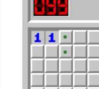 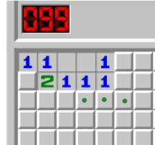 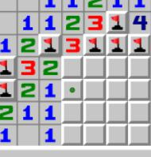
②其他定式请参考基本定式一文。
二、定式变形
定式变形，是一个定式不以最基本的形式出现的情形。有时一些数字旁会有已确定的雷影响，此时需要先将数字减去周围已确定的雷数，得出真实数字，再运用定式。
①11定式变式
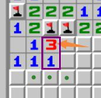
橙色箭头所指的3，周围已有2个雷通过其他方式判出，因此真实数字为1，可以使用11定式。
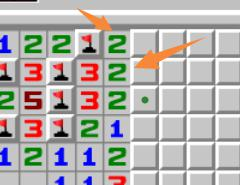
橙色箭头所指的两个2，周围已有1个雷通过其他方式判出，因此真实数字均为1，可以使用11定式。
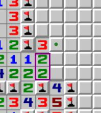
方框内两个2实为11。
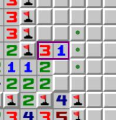
方框内的3减去2为1。
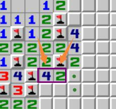
方框内的4、2变为11。
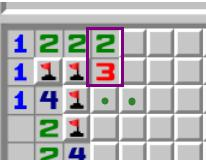
2、3变为11。
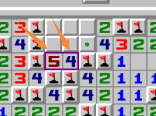
5、4变为11。
②121定式变式
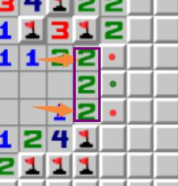
橙色箭头所指的2，周围已有1个雷通过其他方式判出，因此真实数字为1，可以使用121定式。
橙色箭头所指的2，周围已有1个雷通过其他方式判出，因此真实数字为1。
橙色箭头所指的3，周围已有1个雷通过其他方式判出，因此真实数字为2
结合右侧的1，可以使用121定式。
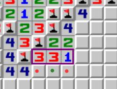 ， 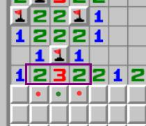
这两个同理。
③1221定式变式
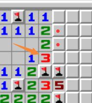
橙色箭头所指的3，周围已有2个雷通过其他方式判出，因此真实数字为1，可以使用1221定式。
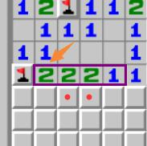
橙色箭头所指的2，周围已有1个雷通过其他方式判出，因此真实数字为1，可以使用1221定式。
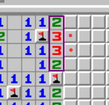
紫框中的2332，每个数字周围都有1个雷通过其他方式判出，因此真实数字为1221。
在线扫雷游戏
keyboard_arrow_up
调色板
close
夜间模式
跟随浏览器
关闭
开启
基于时间
主色
Red
Pink
Purple
Deep-Purple
Indigo
Blue
Light-Blue
Cyan
Teal
Green
Light-Green
Lime
Yellow
Amber
Orange
Deep-Orange
Brown
Grey
Blue-Grey
强调色
Red
Pink
Purple
Deep-Purple
Indigo
Blue
Light-Blue
Cyan
Teal
Green
Light-Green
Lime
Yellow
Amber
Orange
Deep-Orange
恢复默认设置
确定
最近更新
2023年7月03日
-优化文件h5稳定性,新增加载png,菜单界面翻新至v1.02
我知道了